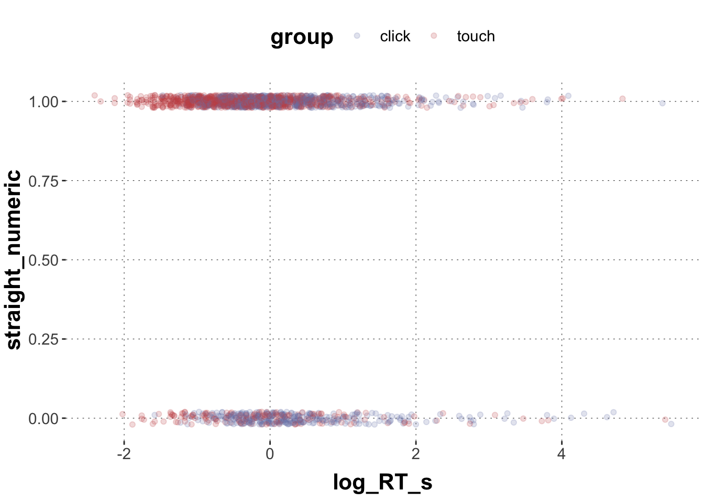
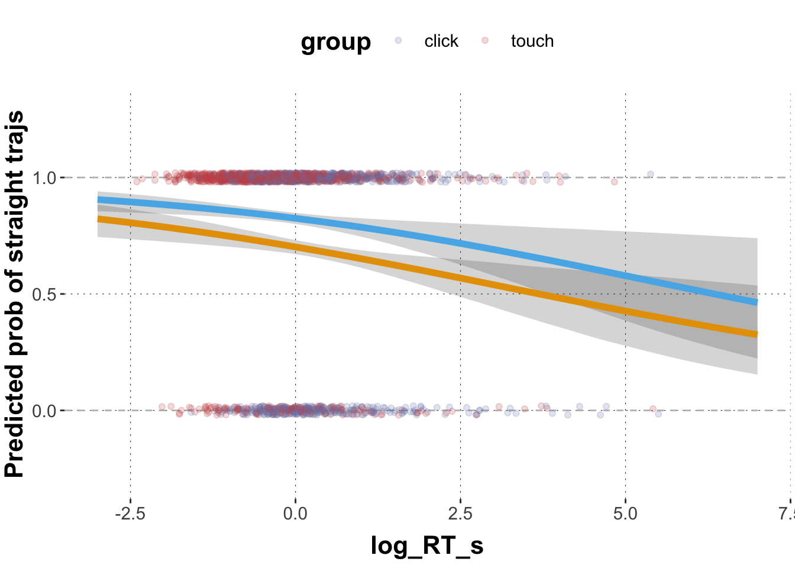
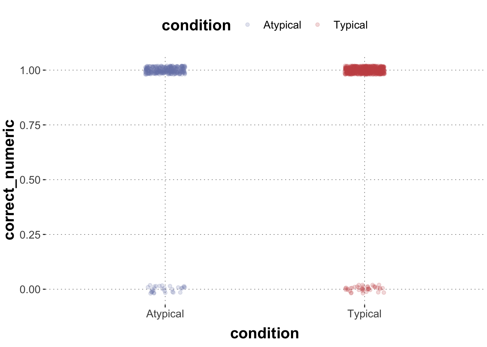
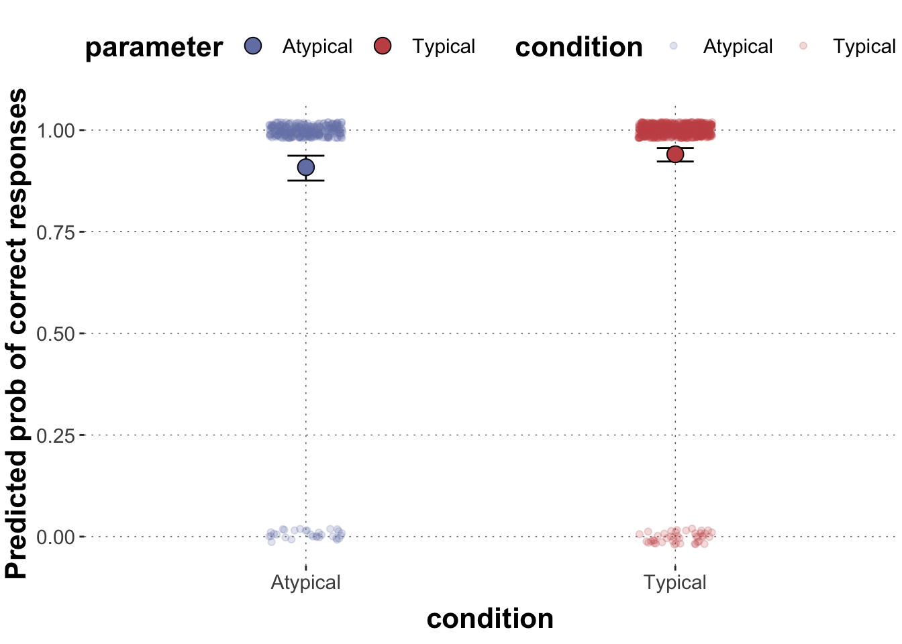
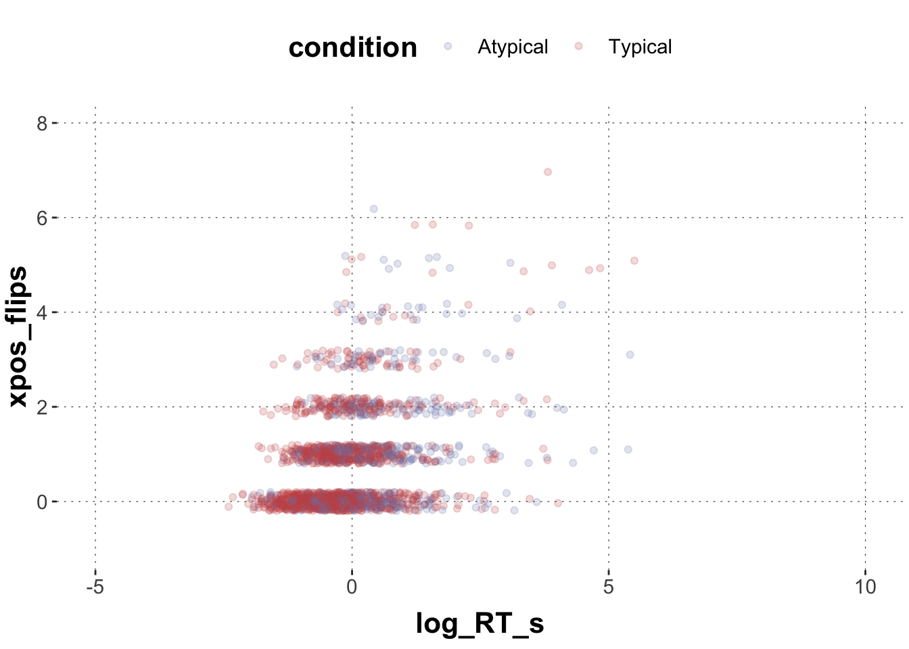
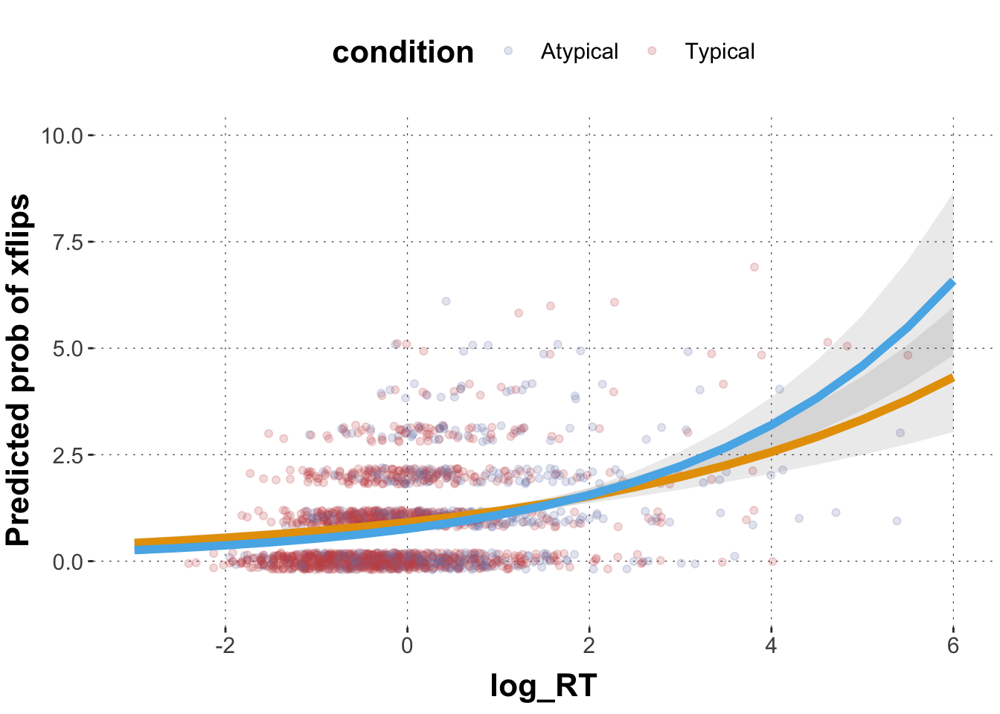
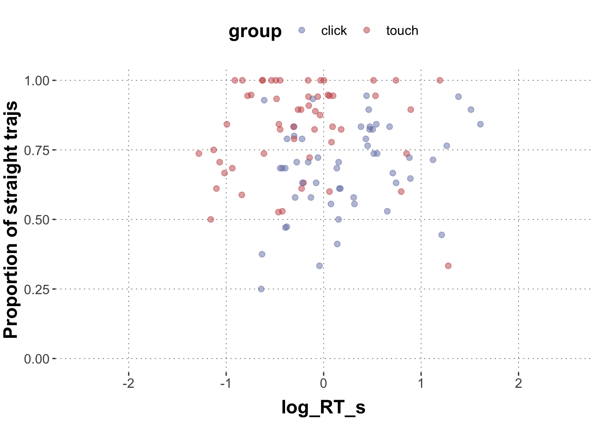

Here is code to load (and if necessary, install) required packages, and to set some global options (for plotting and efficient fitting of Bayesian models).
Toggle code
# install packages from CRAN (unless installed)pckgs_needed <-c("tidyverse","brms","rstan","rstanarm","remotes","tidybayes","bridgesampling","shinystan","mgcv")pckgs_installed <-installed.packages()[,"Package"]pckgs_2_install <- pckgs_needed[!(pckgs_needed %in% pckgs_installed)]if(length(pckgs_2_install)) {install.packages(pckgs_2_install)} # install additional packages from GitHub (unless installed)if (!"aida"%in% pckgs_installed) { remotes::install_github("michael-franke/aida-package")}if (!"faintr"%in% pckgs_installed) { remotes::install_github("michael-franke/faintr")}if (!"cspplot"%in% pckgs_installed) { remotes::install_github("CogSciPrag/cspplot")}# load the required packagesx <-lapply(pckgs_needed, library, character.only =TRUE)library(aida)library(faintr)library(cspplot)# these options help Stan run fasteroptions(mc.cores = parallel::detectCores())# use the CSP-theme for plottingtheme_set(theme_csp())# global color scheme from CSPproject_colors = cspplot::list_colors() |>pull(hex)# names(project_colors) <- cspplot::list_colors() |> pull(name)# setting theme colors globallyscale_colour_discrete <-function(...) {scale_colour_manual(..., values = project_colors)}scale_fill_discrete <-function(...) {scale_fill_manual(..., values = project_colors)}
Exercise 1: logistic regression
Use the following data frame:
Toggle code
# set up data framedolphin <- aida::data_MTdolphin_agg <- dolphin %>%filter(correct ==1) %>%mutate(straight =as.factor(ifelse(prototype_label =="straight", 1, 0)),log_RT_s =scale(log(RT)))
Exercise 1a
Plot straight (straight == 1) vs. non-straight (straight == 0) trajectories (y-axis) against log_RT_s and color-code by group.
Solution
Toggle code
dolphin_agg$straight_numeric <-as.numeric(as.character(dolphin_agg$straight))ggplot(data = dolphin_agg) +geom_point(aes(x = log_RT_s, y = straight_numeric, color = group), # we add a little bit of jitter to make the points better visibleposition =position_jitter(height =0.02), alpha =0.2)

Exercise 1b
Run the appropriate generalized linear model in brms that predicts straight vs. non-straight trajectories based on group, log_RT_s, and their two-way interaction.
Family: bernoulli
Links: mu = logit
Formula: straight ~ log_RT_s * group
Data: dolphin_agg (Number of observations: 1915)
Draws: 4 chains, each with iter = 2000; warmup = 1000; thin = 1;
total post-warmup draws = 4000
Population-Level Effects:
Estimate Est.Error l-95% CI u-95% CI Rhat Bulk_ESS Tail_ESS
Intercept 0.86 0.07 0.71 1.00 1.00 3539 2963
log_RT_s -0.23 0.07 -0.37 -0.10 1.00 2859 2671
grouptouch 0.69 0.11 0.47 0.91 1.00 3300 2810
log_RT_s:grouptouch -0.01 0.11 -0.22 0.20 1.00 2857 2702
Draws were sampled using sampling(NUTS). For each parameter, Bulk_ESS
and Tail_ESS are effective sample size measures, and Rhat is the potential
scale reduction factor on split chains (at convergence, Rhat = 1).
Exercise 1c
Describe the model predictions based on the posterior means of the population coefficients.
Solution
The model predicts that the log odds for the mean log_RT_s in the click group (Intercept = reference level) is 0.86. With every unit of log_RT_s these log odds become smaller by 0.23. The model predicts that the log odds for the mean log_RT_s in the touch group is 1.56 (0.86 + 0.70), i.e. much higher than in the click group. With every unit of log_RT_s these log odds become smaller by 0.22.
The baseline difference between click and touch group is compelling with more straight trajectories in the touch group. The effect of log_RT_s is also compelling with less straight trajectories for slower responses. This relationship is not compellingly modulated between the touch and the click group (virtually identical).
Exercise 1d
Extract the posteriors means and 95% CrIs for the relationships between straight, log_RT_s and group for representative range of log_RT_s values. Plot the logistic regression lines for both groups into one graph. Color code the regression lines according to group.
Solution
Toggle code
# extract posterior means for model coefficientspredicted_values <- GlmMdl %>%spread_draws(b_Intercept, b_log_RT_s, b_grouptouch, `b_log_RT_s:grouptouch`) %>%# make a list of relevant value range of logRTmutate(log_RT =list(seq(-3, 7, 0.2))) %>%unnest(log_RT) %>%# transform into proportion spacemutate(pred_click =plogis(b_Intercept + b_log_RT_s * log_RT),pred_touch =plogis(b_Intercept + b_log_RT_s * log_RT + b_grouptouch +`b_log_RT_s:grouptouch`* log_RT) ) %>%group_by(log_RT) %>%summarise(pred_click_m =mean(pred_click, na.rm =TRUE),pred_click_low =quantile(pred_click, prob =0.025),pred_click_high =quantile(pred_click, prob =0.975),pred_touch_m =mean(pred_touch, na.rm =TRUE),pred_touch_low =quantile(pred_touch, prob =0.025),pred_touch_high =quantile(pred_touch, prob =0.975) ) # plot predicted values against dataggplot(data = predicted_values) +geom_hline(yintercept =c(0,1), lty ="dashed", color ="grey") +geom_point(data = dolphin_agg,aes(x = log_RT_s, y = straight_numeric, color = group), position =position_jitter(height =0.02), alpha =0.2) +geom_ribbon(aes(x = log_RT, ymin = pred_click_low, ymax = pred_click_high), alpha =0.2) +geom_ribbon(aes(x = log_RT, ymin = pred_touch_low, ymax = pred_touch_high), alpha =0.2) +geom_line(aes(x = log_RT, y = pred_click_m), color ="#E69F00", size =2) +geom_line(aes(x = log_RT, y = pred_touch_m), color ="#56B4E9", size =2) +ylab("Predicted prob of straight trajs") +ylim(-0.3,1.3) +xlim(-3,7)

Exercise 1e
Assume we want to predict correct responses based on condition. We look at the touch group only. Set up a data frame and plot the data as a point plot. (Remember how to jitter the data points)
Solution
Toggle code
# set up data framedolphin_agg2 <- dolphin %>%filter(group =="touch")dolphin_agg2$correct_numeric <-as.numeric(as.character(dolphin_agg2$correct))ggplot(data = dolphin_agg2) +geom_point(aes(x = condition, y = correct_numeric, color = condition), # we add a little bit of jitter to make the points better visibleposition =position_jitter(height =0.02, width =0.1), alpha =0.2)

Exercise 1f
Run the appropriate generalized linear model in brms that predicts correct responses based on condition. Extract the posterior means and 95% CrIs for the effect of condition on correct and plot them as points and whiskers into one plot superimposed on the data.
Family: bernoulli
Links: mu = logit
Formula: correct ~ condition
Data: dolphin_agg2 (Number of observations: 1045)
Draws: 4 chains, each with iter = 2000; warmup = 1000; thin = 1;
total post-warmup draws = 4000
Population-Level Effects:
Estimate Est.Error l-95% CI u-95% CI Rhat Bulk_ESS Tail_ESS
Intercept 2.31 0.19 1.95 2.70 1.00 3786 2713
conditionTypical 0.46 0.25 -0.03 0.93 1.00 3076 2403
Draws were sampled using sampling(NUTS). For each parameter, Bulk_ESS
and Tail_ESS are effective sample size measures, and Rhat is the potential
scale reduction factor on split chains (at convergence, Rhat = 1).
Toggle code
# extract posterior means for model coefficientspredicted_values <- GlmMdl2 %>%spread_draws(b_Intercept, b_conditionTypical) %>%# transform into proportion spacemutate(Atypical =plogis(b_Intercept),Typical =plogis(b_Intercept + b_conditionTypical) ) %>%select(Atypical, Typical) %>%gather(parameter, posterior) %>%group_by(parameter) %>%summarise(mean =mean(posterior, na.rm =TRUE),lower =quantile(posterior, prob =0.025),upper =quantile(posterior, prob =0.975) ) # plot predicted values against dataggplot(data = predicted_values) +geom_point(data = dolphin_agg2, aes(x = condition, y = correct_numeric, color = condition), # we add a little bit of jitter to make the points better visibleposition =position_jitter(height =0.02, width =0.1), alpha =0.2) +geom_errorbar(aes(x = parameter, ymin = lower, ymax = upper), width =0.1, color ="black") +geom_point(aes(x = parameter, y = mean, fill = parameter),size =4, color ="black", pch =21) +ylab("Predicted prob of correct responses")

Exercise 2: Poisson regression
We will continue to use dolphin_agg in this exercise.
Exercise 2a
Plot the relationship between xpos_flips and log_RT_s in a scatterplot and visually differentiate between conditions as you see fit.
Solution
Toggle code
ggplot(data = dolphin_agg) +geom_point(aes(x = log_RT_s, y = xpos_flips, color = condition), # we add a little bit of jitter to make the points better visibleposition =position_jitter(height =0.2), alpha =0.2) +ylim(-1,8) +xlim(-5,10)

Exercise 2b
Run an appropriate generalized regression model for xflips with brms to predict xpos_flips based on log_RT_s, condition, and their two-way interaction.
Family: poisson
Links: mu = log
Formula: xpos_flips ~ log_RT_s * condition
Data: dolphin_agg (Number of observations: 1915)
Draws: 4 chains, each with iter = 2000; warmup = 1000; thin = 1;
total post-warmup draws = 4000
Population-Level Effects:
Estimate Est.Error l-95% CI u-95% CI Rhat Bulk_ESS
Intercept -0.09 0.05 -0.19 0.00 1.00 2687
log_RT_s 0.26 0.03 0.19 0.32 1.00 2078
conditionTypical -0.19 0.06 -0.30 -0.07 1.00 2665
log_RT_s:conditionTypical 0.10 0.04 0.02 0.18 1.00 2074
Tail_ESS
Intercept 2577
log_RT_s 2567
conditionTypical 2551
log_RT_s:conditionTypical 2239
Draws were sampled using sampling(NUTS). For each parameter, Bulk_ESS
and Tail_ESS are effective sample size measures, and Rhat is the potential
scale reduction factor on split chains (at convergence, Rhat = 1).
Exercise 2c
Extract the posterior means and 95% CrIs across a range of representative values of log_RT_s (see walkthrough) for both conditions and plot them against the data (as done before in walkthrough and exercise 1).
Solution
Toggle code
predicted_Poisson_values <- GlmMdl3 %>%spread_draws(b_Intercept, b_log_RT_s, b_conditionTypical, `b_log_RT_s:conditionTypical`) %>%# make a list of relevant value range of logRTmutate(log_RT =list(seq(-5, 10, 0.5))) %>%unnest(log_RT) %>%mutate(pred_atypical =exp(b_Intercept + b_log_RT_s * log_RT),pred_typical =exp(b_Intercept + b_log_RT_s * log_RT + b_conditionTypical +`b_log_RT_s:conditionTypical`* log_RT)) %>%group_by(log_RT) %>%summarise(pred_atypical_m =mean(pred_atypical, na.rm =TRUE),pred_atypical_low =quantile(pred_atypical, prob =0.025),pred_atypical_high =quantile(pred_atypical, prob =0.975),pred_typical_m =mean(pred_typical, na.rm =TRUE),pred_typical_low =quantile(pred_typical, prob =0.025),pred_typical_high =quantile(pred_typical, prob =0.975)) ggplot(data = predicted_Poisson_values, aes(x = log_RT)) +geom_point(data = dolphin_agg, aes(x = log_RT_s, y = xpos_flips, color = condition), position =position_jitter(height =0.2), alpha =0.2) +geom_ribbon(aes(ymin = pred_atypical_low, ymax = pred_atypical_high), alpha =0.1) +geom_ribbon(aes(ymin = pred_typical_low, ymax = pred_typical_high), alpha =0.1) +geom_line(aes(y = pred_atypical_m), color ="#E69F00", size =2) +geom_line(aes(y = pred_typical_m),color ="#56B4E9", size =2) +ylab("Predicted prob of xflips") +ylim(-1,10) +xlim(-3,6)

Exercise 3: Logistic regression with binomial likelihood
Binary logistic regression assumes that the outcome variable comes from a Bernoulli distribution which is a special case of a binomial distribution where the number of trials is \(n = 1\) and thus the outcome variable can only be 1 or 0. In contrast, binomial logistic regression assumes that the number of the target events follows a binomial distribution with \(n\) trials and probability \(q\).
Take the following subset of the dolphin data frame that only contains correct responses (= 1).
Toggle code
# set up data framedolphin_sub <- dolphin %>%filter(correct ==1) %>%mutate(straight = (ifelse(prototype_label =="straight", 1, 0)),log_RT_s =scale(log(RT)))
Exercise 3a
For each subject_id in each group, aggregate the mean log_RT_s, the number of trials that are classified as straight trajectories, and the total number of trials. Plot the proportion of trials that are classified as straight (vs. all trials) trajectories for each subject.
Solution
Toggle code
# set up data framedolphin_agg3 <- dolphin_sub %>%group_by(subject_id, group) %>%summarize(log_RT_s =mean(log_RT_s),straights =sum(straight),total =n()) # plot predicted values against dataggplot(data = dolphin_agg3) +geom_point(aes(x = log_RT_s, y = straights/total, color = group), size =2, alpha =0.5) +ylab("Proportion of straight trajs") +ylim(0,1) +xlim(-2.5,2.5)

Exercise 3c
Formulate a binomial logistic regression model to predict the proportion of straight trajectories based on log_RT_s, group, and their two-way interaction. Note that these proportional data are not assumed to be generated by a Bernoulli distribution, but a binomial distribution. Take that into account by setting family = binomial(link = "logit"). You also need to tell brms about the number of observations by using formula syntax like this: k | trials(N) ~ ... where k is the variable containing the number of “successes” and N the variable containing the number of trials.
Extract posterior means and 95% CrIs for the effect of log_RT_s for both groups and plot them across a representative range of log_RT_s.
Solution
Toggle code
# We specify both the number of target events (straights) and the total number of trials (total) wrapped in trials(), which are separated by |. In addition, the family should be “binomial” instead of “bernoulli”.GlmMdl4 <-brm( straights |trials(total) ~ log_RT_s * group, data = dolphin_agg3, family =binomial(link ="logit"))summary(GlmMdl4)
Family: binomial
Links: mu = logit
Formula: straights | trials(total) ~ log_RT_s * group
Data: dolphin_agg3 (Number of observations: 108)
Draws: 4 chains, each with iter = 2000; warmup = 1000; thin = 1;
total post-warmup draws = 4000
Population-Level Effects:
Estimate Est.Error l-95% CI u-95% CI Rhat Bulk_ESS Tail_ESS
Intercept 0.69 0.07 0.54 0.83 1.00 3773 3073
log_RT_s 0.47 0.13 0.21 0.73 1.00 2376 2608
grouptouch 0.94 0.12 0.71 1.19 1.00 3248 2453
log_RT_s:grouptouch -0.32 0.20 -0.71 0.06 1.00 2613 2631
Draws were sampled using sampling(NUTS). For each parameter, Bulk_ESS
and Tail_ESS are effective sample size measures, and Rhat is the potential
scale reduction factor on split chains (at convergence, Rhat = 1).
Toggle code
# extract posteriors means and 95% CrIspredicted_values <- GlmMdl4 %>%spread_draws(b_Intercept, b_log_RT_s, b_grouptouch, `b_log_RT_s:grouptouch`) %>%# make a list of relevant value range of logRTmutate(log_RT =list(seq(-3, 3, 0.2))) %>%unnest(log_RT) %>%# transform into proportion spacemutate(pred_click =plogis(b_Intercept + b_log_RT_s * log_RT),pred_touch =plogis(b_Intercept + b_log_RT_s * log_RT + b_grouptouch +`b_log_RT_s:grouptouch`* log_RT) ) %>%group_by(log_RT) %>%summarise(pred_click_m =mean(pred_click, na.rm =TRUE),pred_click_low =quantile(pred_click, prob =0.025),pred_click_high =quantile(pred_click, prob =0.975),pred_touch_m =mean(pred_touch, na.rm =TRUE),pred_touch_low =quantile(pred_touch, prob =0.025),pred_touch_high =quantile(pred_touch, prob =0.975) ) # plot predicted values against dataggplot(data = predicted_values) +geom_point(data = dolphin_agg3,aes(x = log_RT_s, y = straights / total, color = group),alpha =0.2, size =2) +geom_ribbon(aes(x = log_RT, ymin = pred_click_low, ymax = pred_click_high), alpha =0.2) +geom_ribbon(aes(x = log_RT, ymin = pred_touch_low, ymax = pred_touch_high), alpha =0.2) +geom_line(aes(x = log_RT, y = pred_click_m), color ="#E69F00", size =2) +geom_line(aes(x = log_RT, y = pred_touch_m), color ="#56B4E9", size =2) +ylab("Predicted prob of straight trajs") +ylim(0,1) +xlim(-2.5,2.5)
Exercise 3c
Now compare the results from this analysis to the results from the model 1b above which you plotted in 1d. How do the model results differ and why could that be? (Feel free to explore the data to understand what is going on.)
Solution
The model in 1b suggested a negative coefficient of reaction time, i.e. slower responses lead to less straight trajectories. The model here suggests a positive coefficient for reaction time, i.e. slower responses lead to more straight trajectories. Given the data, the model, and the priors, this effect is compelling for at least the click group.
A major difference in the two analyses is that the former analysis looked at all data and disregarded that responses came from clusters of sources. For example, responses that come from one and the same participant are dependent on each other because participants might differ in characteristics relevant to the task, like how fast they move and how many times they move to the target in a straight trajectory. The latter analysis aggregated participants behavior by looking at the proportion of straight trajectories within each subject, thus one data point corresponds to one participant, resulting in data points being independent (at least regarding the participant identity). If all participants showed a negative effect of reaction time on the likelihood of straight trajectories, but participants systematically differ in terms of their baseline correlation between reaction time and likelihood of producing straight trajectories in the opposite direction (positive relationship), we might get discrepancies between these different models. What we ultimately need is to take multiple levels of the data into account simultaneously, which is the topic of next week.